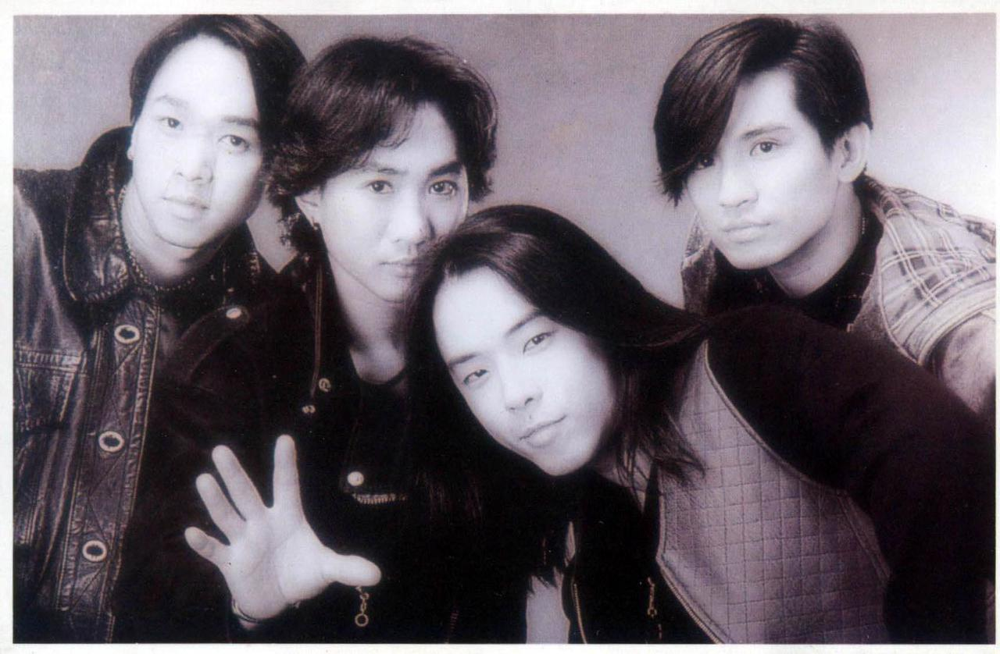
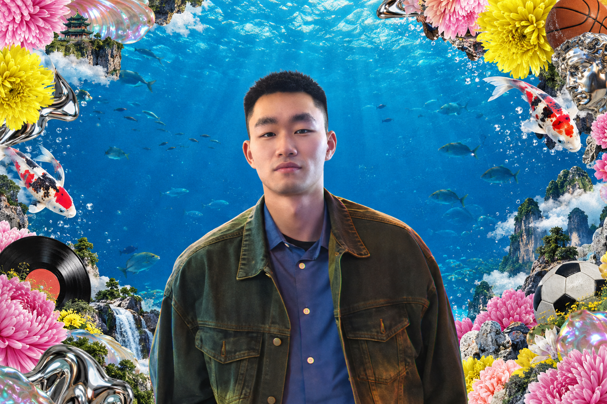
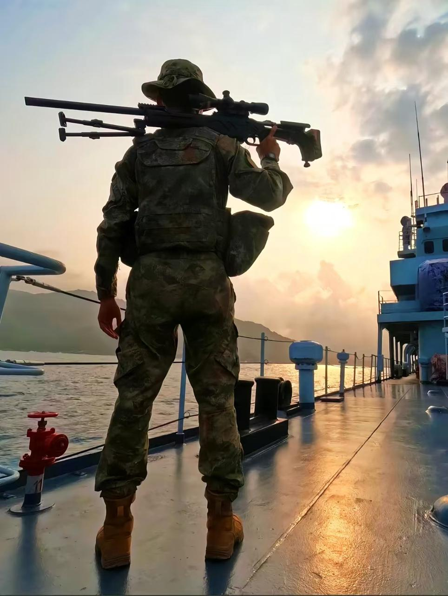
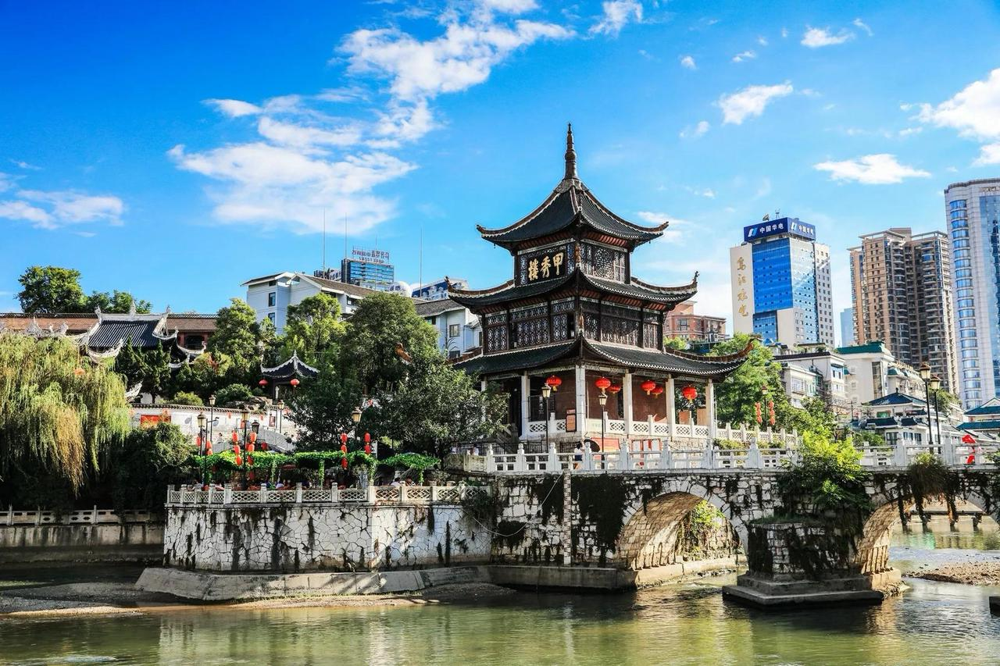

01 / SOUNDTRACK↗

BEYOND我的精神 BGM
《海阔天空》《光辉岁月》，陪我走过军旅生涯。喜欢歌里的自由，也喜欢那份坚持。
听着《海阔天空》，提醒自己保持热爱，继续探索。

GUIYANG BOY. A WORLD OF POSSIBILITIES.
你好，我是祖朋。走过海上的风浪，也热爱生活里的每一种可能。
从军旅到 AI，从球场到 Beyond，欢迎来到我的世界。

A LITTLE INTRODUCTION
你好，我是祖朋。
1999 年 9 月 12 日出生，贵州贵阳人。
从海军陆战队退伍回来，篮球、足球、健身都掺和一脚。熟人面前话不少，陌生人面前偶尔会开启“防冷场防御机制”，熟悉之后自动解除。
不止一种身份，
也不止一种可能。
曾服役于海军陆战队。
纪律、责任与团队协作，
是这段经历留给我的底色。

“四有”优秀士兵
嘉奖
所在班集体三等功
参与任务 / MISSIONS
01第 24 批亚丁湾护航↗
022024“东部利剑 A”等任务↗

《海阔天空》《光辉岁月》，陪我走过军旅生涯。喜欢歌里的自由，也喜欢那份坚持。
听着《海阔天空》，提醒自己保持热爱，继续探索。

避暑不是口号，是日常。酸汤鱼、肠旺面、折耳根，本地胃认证。
GUIYANG, GUIZHOU
我的来处，也是我的底气。
动起来的时候，整个人都跟着明亮起来。
金铲铲玩家。喜欢不用拼手速、靠脑子下棋的游戏，每一把都当排位打。
生活可以苦，
但不能不好笑。
LEARNING. EXPLORING. BECOMING.